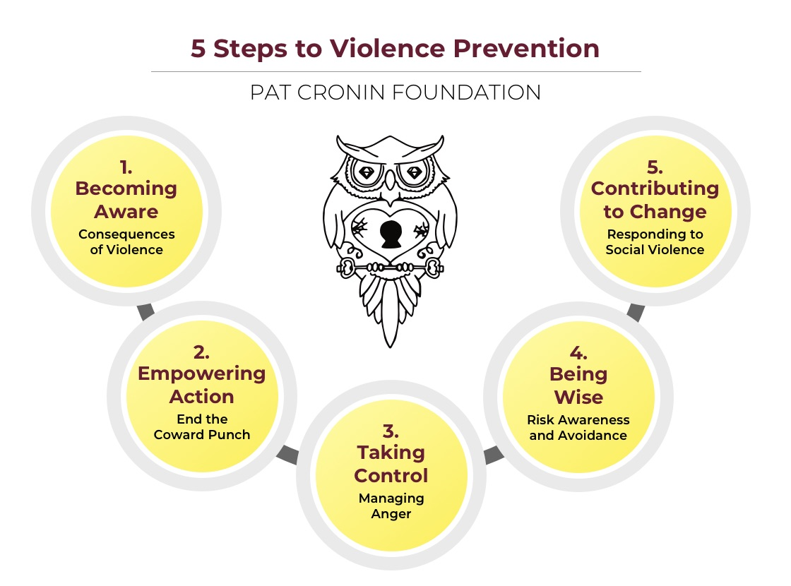

Ruben Sutton - Alternatives to Violence - Pat Cronin Foundation
Ruben Sutton - Alternatives to Violence - Pat Cronin Foundation
Alternatives to Violence - Pat Cronin Foundation
From the Foundation Up
Pat Cronin Story
What personal story does the documentary "Pat’s Story" share, and how did Pat Cronin’s experience lead to the creation of the Pat Cronin Foundation?
How does “From the Foundation Up” explore the legal and emotional journey of Pat’s family, and what does it reveal about resilience and the justice system?
In what ways does the documentary encourage viewers to reflect on bystander behaviour, intervention, and responsibility?
What does the film suggest about the lasting impact of violence on families and communities, as seen through the Cronin family’s experience?
What is a “coward punch,” and how does the documentary define its consequences both medically and socially?
How effectively does the documentary communicate the medical risks of a single punch, and what imagery or expert testimony supports that message?
What legal or systemic issues are highlighted in the documentary, and why do the Cronins believe changes are needed?
After viewing the documentary, how might you personally commit to preventing violence in your own community?

Once you have completed the online Modules, include a link to your completed Certificate HERE.